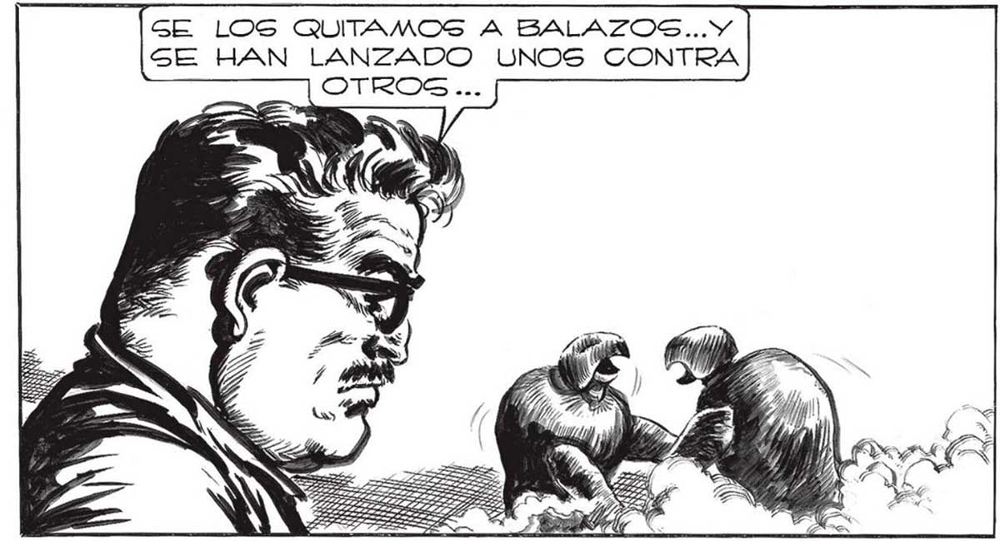
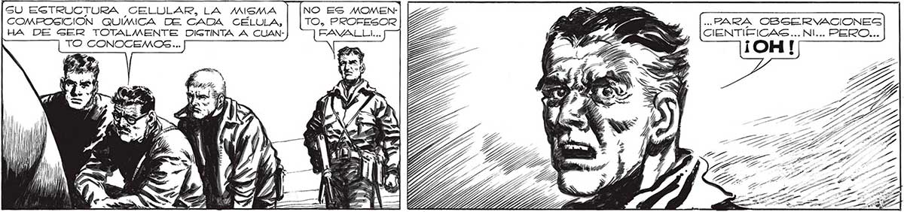

GE LOS QUITAMOS A BALAZOS...Y SE HAN LANZADO UNOS CONTRA PERO NO NOG HAGAMOS ILUGIONEG... FALLADO EL ATAQUE CON LOS "GURBOS”, lOG ELLOS RECURRIRAN A OTRA COSA... WS == ez 'Ú ' Pri ? -] GU ESTRUCTURA CELULAR, LA MISMA COMFOSICION QUIMICA DE CADA CÉLULA, HA DE GER TOTALMENTE DIGTINTA A CUANTO CONOCEMOS... LASTIMA NO PODER ESTUDIARLOS DETE| NIDAMENTE... SON CON MUCHO MAS EX| TRAORDINARIOS QUE L NO ES MOMENTO, PROFESOR FAVALL!... LIBRADOG A SÍ MISMOS LOS '“GURBOS” SON FIERAS GSANGUINARIAS QUE NO SOPORTAN LA PRESENCIA DE UN CONGENERE .. COMO PERROS CUESTA ADMITIRLO LUEGO DE HABER 223 VIGTO LA MUERTE TAN DE CERCA... PERO POR ALIORA..¡ESTAMOS SALVADOS! => , á AY A HAN DE VENIR DE ALGÚN PLANETA DONDE LA FUERZA DE LA GRAVEDAD ES MUY GRANDE... 7 OG "CASCARUDOS ”... PARA OBSERVACIONES CIENTIEICAS... NI... PERO...

